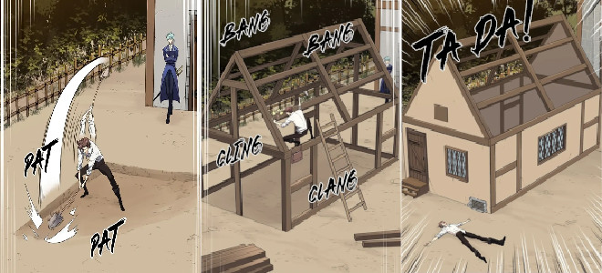

Les planchers Ondol furent le premier projet de construction entrepris par Lloyd Frontera.
Le succès du projet a directement conduit à la création de la mine de charbon noir,
car ces planchers nécessitent des quantités constantes de combustible combustible.
La voie Appienne est le grand projet d'infrastructure imaginé par Lloyd Frontera.
Conçue pour relier la résidence de la baronnie Frontera au pied des montagnes de l'Est,
elle avait pour objectif principal d'accélérer le transport du charbon et de transformer le
comté en un véritable pôle commercial.
La mine de charbon noir était un projet de construction conçu par Lloyd Frontera
afin de répondre au nombre croissant d'étages d'ondol nécessitant du combustible.
Les seokbinggo sont des glacières coréennes traditionnelles datant de l'Antiquité.
Dans le contexte du désert, Lloyd Frontera propose cette solution aux orques de la tribu du
Sable et de l'Acier,
qui doivent chasser quotidiennement faute de pouvoir conserver leur viande.
Le projet de transformation de ce marais en terre fertile fut lancé par Lloyd Frontera,
dans le but d'augmenter considérablement les recettes fiscales tout en permettant aux villageois
de prospérer.
La plate-forme maritime artificielle créer par Lloyd Frontera permet d'accueillir une statue de
siréne
a la surface de l'eau permettant de prévenir des attaques de gigatitan
Le pont suspendu de Magentano, plus tard appelé Lloydavi, est une prouesse d'ingénierie
révolutionnaire réalisée par Lloyd Frontera à la demande de la reine Alicia Termina Magentano.
La station d'épuration de Frontera fut construite par Lloyd Frontera suite à une catastrophe
sanitaire annoncée : une épidémie de choléra qui aurait décimé la population de son seigneur en
raison de l'augmentation massive de nouveaux habitants.
Détails Des Projets
Ondols
Construction
Au cours de son deuxième jour dans le corps de Lloyd Frontera, Suho Kim a pensé pour la première
fois
à introduire des sols ondol dans le comté de Frontera après avoir entendu que la mère du
propriétaire du pub local souffrait de rhume.
Après avoir reçu sa première commande du propriétaire du pub, Lloyd a passé une semaine à construire
avec succès la charpente traditionnelle en bois et les murs en terre cuite d'une petite maison
ondol.

Aperçu construction-ondols
Il a réalisé tout ce travail seul avant de recevoir l'aide de Javier Asrahan, qui a
remarqué à la fois sa détermination et son épuisement. Ils ont terminé le reste de la construction
ensemble.
Aperçu javier-aide-lloyd-ondols
Conséquences
Le propriétaire du pub et sa mère furent tous deux extrêmement satisfaits du résultat. Cette
dernière, en particulier, constata que la chaleur soulageait considérablement ses douleurs
articulaires et musculaires.
Aperçu javier-aide-lloyd-ondols
La nouvelle de ce résultat apparemment miraculeux se répandit dans la
ville, incitant une foule de villageois à faire la queue pour le constater de leurs propres yeux.
Lloyd reçut ensuite 32 commandes pour le Style A et 57 commandes pour le Style B.
Aperçu javier-aide-lloyd-ondols